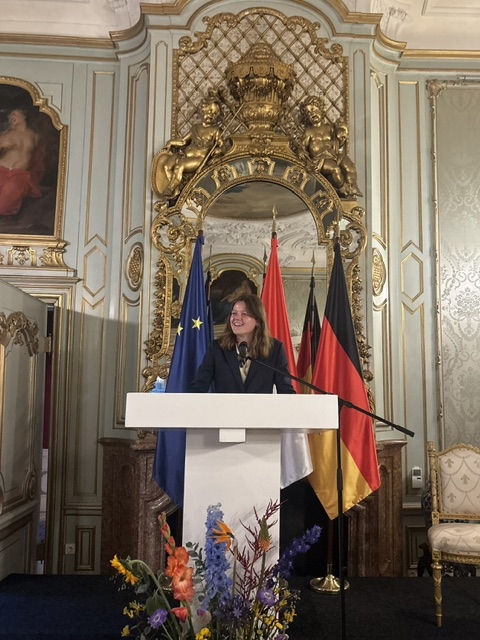

Map Portfolio
Click on any map to learn more about them.
A showcase of maps made by Veronique Verweij using QGIS, showcasing various abilities within carthography.
View MapsI am Veronique Verweij, a student at University College Utrecht focusing on political science and sustainability. I am interested in GIS due to the possibilities it has within the field of conservation and sustainability. This is my first interaction with GIS and this portfolio shows the different skills I learned during the course. This website shows everything I learned during my course on Geographical Information Systems and how I directly implemented the skills on real life applications.
In my career, I would like to focus on sustainable development and diplomacy. For both fields, it is useful to be able to use GIS and understand the geographic implications. For example, for sustainability the possibilities for mapping are endless. From looking at what regions undergo the most deforestation to analyzing what areas are most prone to flooding. For diplomacy, GIS is more useful than one would think at first. For conflict resolution or border disputes, one can use maps for accuracy. GIS is also heavily used within humanitarian aid to coordinate aid distribution. Thus, GIS can be used in countless ways and this portfolio shows the first steps I made in understanding and using the software.
Do not be afraid to reach out if any questions or remarks occur. Enjoy looking at my page!

GIS stands for "Geographical Information Systems". It is a computer system that creates maps of all types, using geographical and spatial data. With GIS, abstract data becomes visible in maps that are clear for the main audience. There are countless implementations for GIS and it is used daily, from using google maps to tracking a parcel that was supposed to have arrived already. GIS is all around us. Governments, municities, or even the ministry of defense, they all use GIS for their own interests. For example, one can look for the concentration of primary schools in an area, to locate which neighbourhoods have the least accessibility, which can lead to building new schools in such neighbourhoods. This is exactly what I tried to find in one of my projects, which can be found below!
Click on any map to learn more about them.
These are the skills I gained during the projects.
Name: Veronique Verweij
Email: veronique.verweij@icloud.com
University: University Utrecht
LinkedIn: linkedin.com/in/VeroniqueVerweij